Towers and spires round exact cores in Fibonacci beats: the DICTO Cleo Towers, the DICTO Polar Cleo Towers, the OG core of 80 Aktis, the OTT core of 38 rays (Oktaktis, Triaktis and Tetraktis), and the OG turned out
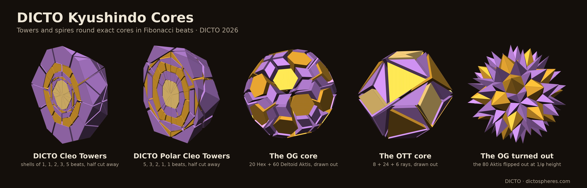
The beat. As in Universal PiTet [1]: for a convex solid S centred at the origin, T(S) = {x : v·x ≤ v·v for every corner v of S}. Each face of T(S) passes through a corner of S at right angles to the line from the centre. A corner v of S stays on the surface of T(S) exactly when w·v ≤ w·w for every corner w of S (otherwise the face of w cuts it off). This is not true of every convex solid, but it holds, exactly, for every station stepped from in this paper: the ID, RT, GTI and FPD, and so for all their scaled copies, since the condition does not change with scale (it holds too for the OG, TPH, TQH and TQHD, but not for the TQP, where 60 of the 140 corners would be cut off). In the plane this is the classical antipedal construction about a point; T is its three-dimensional form [1, 10], and the reverse step P, whose corners are the foot points of S's face planes (the points of the planes nearest the centre), is Smarandache's face pedal polyhedron [9], run from the OG in [2]. DICTO calls one step a beat.
The rhythm. DICTO's idea: shells of towers as tall as possible, in a Fibonacci rhythm. Shell n fuses Fn beats, 1, 1, 2, 3, 5, so the shells end at beats 0 | 1 | 2 | 4 | 7 | 12, and the beats inside a shell are passed through, not drawn.
The towers. A shell between an inner solid A and an outer solid B ⊃ A is cut into one tower per face of A: the cone from the centre over that face, cut off by B, without the pyramid from the centre to the face (these are the shell pieces of [1]). By Lemma 1 (§2) the towers fill the shell and towers on faces of one symmetry orbit are congruent; for every shell below we also check exactly that the towers on each kind of face form one orbit of the 60 exact rotations of the icosahedral group, have one exact volume, and add up to the volume of the shell with remainder exactly 0, and that the inner and the outer solid of every shell are each fixed by all 60 rotations. Corners are proved as in [1]: floating point only guesses which faces meet at a corner; every corner then solves its faces exactly and lies inside every face, every face holds at least three corners, and every edge lies in exactly two faces with V − E + F = 2.
The OG turned out (DICTO's idea: turn the inside towers out and start a new sequence). Cut the DICTO Ogdoecontahedron (OG) [3] into its 80 face pyramids, the Aktis (§5), and flip each outward over its own face; DICTO chose the golden step: each Aktis shortened to 1/φ of its height before it is flipped, so its tip lies at φ times the foot point of its face plane (the point of the plane nearest the centre). The hull of the 80 tips is the next solid S1; on it the same is done again, one beat at a time: S0 = OG, Sk = the hull of the tips of Sk−1. The OG's downward family [2] is D0 = OG, Dk = P(Dk−1), the hull of the foot points of Dk−1's face planes; D1, …, D4 are DICTO's TPH, TQH, TQP and TQHD (Triangle-Pentagon Hecatontatriacontadihedron, Triangle-Quadrilateral-Hexagon Polyhedron, Triangle-Quadrilateral-Pentagon Polyhedron and Triangle-Quadrilateral-Hexagon Diacosihedron), and we call the next ones down 5, down 6, …. DICTO named these by their face kinds and face count (Table 9): down 5 to down 11 are the DICTO TQP-252, TQ-320, TQP-402, TQ-500, TQD-732, TQHD-662 (not the TQHD of [2]) and TQP-672; below, down k and its name are used interchangeably.
What is proved. Each result is marked: general, proved for every k or every solid of the kind stated; built, proved exactly in ℚ(√5) for every case built (the cases are listed); observed, seen in the cases built and not proved.
Notation: for a convex polytope S with the centre O inside, with faces ni·x ≤ hi (unit normals, hi > 0), R(S) is the largest corner distance and r(S) the smallest face distance from O; tmin(S) is the least t with S ⊂ t·P(S). By Theorem 1 below, Sk−1 ⊂ Sk in the OG turned out holds exactly when tmin(Dk−1) ≤ φ. Theorems 1 and 2 and their proofs were found with Claude (Anthropic) for DICTO's construction; the full proofs are in the study folder 2026-10-21-nesting-proof (README.md).
Theorem 1 (containment constant; general). For every convex polytope S with O inside, maxv |v|²/hP(v) ≤ tmin(S) ≤ R(S)/r(P(S)) ≤ (R(S)/r(S))², where hP(v) = max{p·v : p ∈ P(S)} is the support function of P(S) at the corner v. Equality holds throughout for the five Platonic solids (9 for the tetrahedron, 3 for the cube and octahedron, 15 − 6√5 for the dodecahedron and icosahedron). No constant works for all polytopes, not even centrally symmetric ones: thin square bipyramids have tmin = (R/r)² → ∞.
Proof. For a unit vector u let s·u be the boundary point of S in direction u, on face i; then s ≤ R and ni·u = hi/s ≥ hi/R, so P(S), which contains the foot point hini, has support at least hi(ni·u) ≥ r²/R in every direction and so contains the ball of radius r²/R; hence r(P(S)) ≥ r²/R, and S, inside the ball of radius R, lies in (R/r(P(S)))·P(S) ⊂ (R/r)²·P(S). For the lower bound, P(S) lies in the half-space v·x ≤ hP(v), so v ∈ t·P(S) needs |v|² = v·v ≤ t hP(v). For a Platonic solid all |v| = R and all hi = r, and the face normal nearest a corner makes the angle arccos(r/R) with it, so both bounds equal (R/r)². ∎
Theorem 2 (icosahedral nesting; general). Every convex polyhedron S with icosahedral rotational symmetry about O satisfies S ⊂ (15 − 6√5)·P(S) ⊂ φ·P(S); 15 − 6√5 ≈ 1.583592 < φ, since 29 < 13√5 (841 < 845), and the constant is sharp (icosahedron, dodecahedron).
Proof. By Theorem 1 it suffices that r(S) ≥ c·R(S) with c = √((5 + 2√5)/15) ≈ 0.794654, the inradius-to-circumradius ratio of the icosahedron, since then (R/r)² ≤ 1/c² = 15 − 6√5. Let v be a farthest corner. S is convex and symmetric, so it contains the hull of the orbit of v, and every face plane, with unit normal w, has distance at least maxg (g v)·w. So it is enough to show the covering lemma: for all unit u, w some rotation g of the icosahedral group I has (g u)·w ≥ c, i.e. every orbit comes within θ* = arccos c ≈ 37.377° of every direction. The reflection group Ih tiles the sphere by 120 copies of the (2, 3, 5) Möbius triangle T, with sides 20.905°, 31.717° and 37.377°; a spherical convex polygon with all vertex distances below 90° has diameter equal to its longest vertex distance, so diam T = θ*. The kite K = T ∪ sT (s the reflection in the longest side) has diagonals θ* and 2 × 18° = 36°, by the spherical sine rule (sin of the altitude = sin 20.905° sin 31.717°/sin 37.377° = sin 18° exactly), so diam K = θ* too. Move u into T by Ih (replacing the orbit by its antipodal image, which has the same covering radius) and pick h in Ih with h w in T: if h is a rotation, d(h−1u, w) ≤ θ*; otherwise h = s g with g in I, and u and g w both lie in K, so d(g−1u, w) ≤ θ*. ∎ (Checked numerically, including the 18° altitude and the minimum inradius of orbit hulls, in covering_lemma.py.)
Corollary 1 (the OG turned out; general). Sk = φk·Dk for every k, and the sequence is nested, Sk−1 ⊂ Sk, for every k; the same holds for the golden tower φkPk(S) of every icosahedrally symmetric start S. The downward family itself does not nest: Dk ⊂ Dk−1 holds only for k = 1, 2 and 4 among k ≤ 9 (Proposition 1: the feet of D8's 120 outlying triangles put D9 outside D8).
Proof. Sk = φkDk by induction: S0 = D0; if Sk−1 = φk−1Dk−1, its face planes and their foot points are those of Dk−1 scaled by φk−1, the tips are φ times these, so Sk = φkP(Dk−1) = φkDk (P commutes with scaling). Every Dk is icosahedrally symmetric, so by Theorem 2 Dk−1 ⊂ φ·P(Dk−1) = φ·Dk; multiply by φk−1. ∎ The exact margins tmin(Dk) for k = 0, …, 8 are in Table 7 (all ≤ 3/φ² ≈ 1.1459, with equality at k = 3); the nesting was also checked directly in ℚ(√5) for k ≤ 8 (nest_feet.py).
Theorem 3 (polarity of the beats; general). Let Sk be the beats of the Universal PiTet rule from the icosidodecahedron of circumradius φ (S0 = ID, S1 = RT, S2 = GTI, S3 = FPD, Sk+4 = c·Sk, c = 10/φ⁴ [1]), for all integers k. Reciprocation about the sphere of radius² ρ² = 15 − 5√5 = c·φ² maps Sk to S5−k for every k.
Proof. For k = 0, …, 5 the polar {x : v·x ≤ ρ² for every corner v of Sk} is computed exactly and equals S5−k. Polarity reverses scaling, polar(c·S) = polar(S)/c, so polar(Sk+4) = S5−k/c = S1−k, and the six cases give every k. This is the self-polarity of [1, Proposition (iv)], read beat by beat. ∎
Lemma 3 (polarity exchanges the two steps; general; elementary, but not found in the sources checked). For a convex polytope S with O inside and reciprocation about any sphere centred at O, polar(P(S)) = T(polar(S)).
Proof. Let S have faces ni·x ≤ di. Then polar(S) is the hull of the points wi = ρ²ni/di, so T(polar(S)) = {x : wi·x ≤ wi·wi} = {x : ni·x ≤ ρ²|ni|²/di}. P(S) is the hull of the foot points fi = dini/|ni|², so polar(P(S)) = {x : fi·x ≤ ρ²} = {x : ni·x ≤ ρ²|ni|²/di}, the same set. ∎
Corollary 2 (the polar of the OG turned out; general). polar(Sk) = φ−k·Tk(polar OG) = φ−k·Tk(Hecatodihedron) (the OG is the polar of the DICTO Hecatodihedron [3]; about the unit sphere, polar(OG) is a scaled Hecatodihedron, its counts and face kinds checked exactly), and these solids nest inward for every k, polar(Sk) ⊂ polar(Sk−1), since polarity reverses inclusion (Corollary 1). (Built: checked exactly for k ≤ 4, §7.)
Proof. Induction with Lemma 3 and polar(φX) = polar(X)/φ: polar(Sk) = φ−kpolar(P(Dk−1)) = φ−kT(polar(Dk−1)) = … = φ−kTk(polar(OG)). ∎
Lemma 1 (towers; general). Let A ⊂ B be convex solids with the centre inside A, both fixed by a rotation group G. The towers over the faces of A fill B ∖ A and meet only in their boundaries, and towers over faces in one G-orbit are congruent.
Proof. The cones from an inside point over the faces of A cover space and meet only in boundaries; cut by B they cover B, and removing the pyramids from the centre over the faces, which make up A, leaves B ∖ A. A rotation g in G with g(F) = F′ maps the cone over F onto the cone over F′ and fixes A and B, so it maps the tower on F onto the tower on F′. ∎
Lemma 2 (foot points; general). For a convex solid S with the centre inside it, P(S) ⊂ S exactly when the foot point of every face plane lies in its own (closed) face; a foot point outside its face lies outside S.
Proof. A face plane supports S, and S meets it exactly in the face; the foot point lies on the plane, so it is in S exactly when it is in the face. P(S) is the hull of the foot points, and lies in the convex S exactly when all of them do. ∎
Proposition 1 (the ribbons and the break; built). On the OG and the TPH every foot point lies inside its face, so TPH ⊂ OG and TQH ⊂ TPH. On the TQH the foot points of the 60 trapezoids, the 30 ribbons of §8, lie outside their faces and all others inside; by Lemma 2 the TQP is not inside the TQH, and its 60 corners from those feet are the ones standing outside, as found in [2]. On the TQP the feet of the 60 triangles lie on the edges of their faces and all others inside, so TQHD ⊂ TQP. Further down the feet of other faces fall outside (the 60 trapezoids of the TQHD, which lie in rings of five, 60 four-sided faces of down 5, 180 triangles of down 6, 240 of down 7 and 120 of down 8), and the downward family does not nest again. So the first break of the downward family is caused exactly by the ribbons; turned out, the factor φ per beat absorbs every such break (Corollary 1). ∎ (exact: nest_feet.py)
Remark (the reverse step is not always undone). T(P(S)) = S holds when every foot point of S is a corner of P(S). For D6, D7 and D8 the reverse step fails: 60, 60 and 90 of the listed foot points of D5, D6 and D7 lie strictly inside the next hull, whose true corners number 192 of 252 (D6), 260 of 320 (D7) and 312 of 402 (D8); at D9 it holds again, all 500 listed points being corners. The tower and Corollary 1 use only the hulls and are unaffected. Face counts are not monotone either: the points listed for Dk+1 are the faces of Dk, and D10 has 662 faces against 732 for D9.
The core is DICTO's CLEO sphere [7, §5.5]: the icosidodecahedron (ID), cut from its centre into 20 CLEOs [6] on its triangles and 12 pentagonal pockets. Here it has circumradius φ (edge 1), the frame of [1]. Its beats are the stations of Universal PiTet: S0 = ID, S1 = RT (rhombic triacontahedron), S2 = DICTO GTI (Golden Truncated Icosahedron), S3 = DICTO FPD (Flat Pentakis Dodecahedron), and S4 = c·ID with c = 10/φ⁴ = 35 − 15√5 ≈ 1.459: one turn of four beats returns the ID exactly c times larger (checked again here), so Sk+4 = c·Sk for every k [1].
So the five shells hold 32, 30, 32, 32 and 60 towers, 186 in all, and the solid of 12 beats is the ID again, c³ ≈ 3.11 times as wide as the core. Shells 1 and 2 are the first two shells of [1]; shells 3, 4 and 5, which fuse beats, are new. In each fused shell the towers stand on the faces of the shell's inner solid only, so the solids passed through leave no trace: shell 3, for instance, has towers on the GTI's 20 hexagons and 12 pentagons that reach to the corners of c·ID.
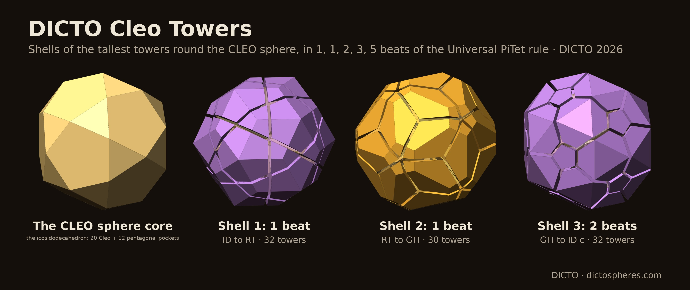
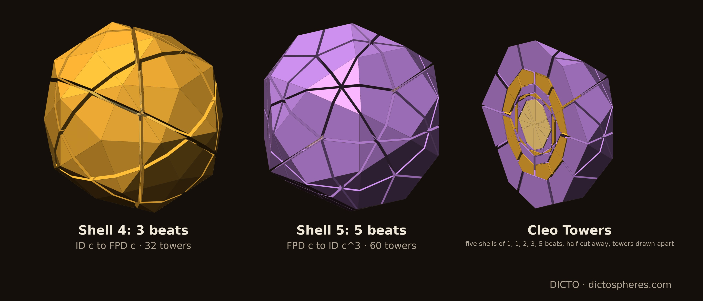
DICTO asked what the polar of the Fibonacci shells would give. Take the sphere through the GTI's corners, radius² ρ² = 15 − 5√5 = c·φ²: 10/φ⁴ times the CLEO sphere's radius². Polar reciprocation about it takes every beat to another beat: polar(Sk) = S5−k, checked exactly for k = 0, …, 5 (ID ↔ c·RT, RT ↔ c·ID, GTI ↔ FPD; this is the self-polarity of [1, Proposition (iv)]); since polar(c·S) = polar(S)/c, it holds for every k (Theorem 3). The boundaries 0 | 1 | 2 | 4 | 7 | 12 of the Cleo Towers go to 5 | 4 | 3 | 1 | −2 | −7: read from the centre, shells of 5, 3, 2, 1 and 1 beats, the most beats deepest. The core is S−7 = RT/c², which cuts from its centre into 30 rhombic rays.
The polar shells hold 30, 32, 30, 60 and 32 towers, 184 in all. Shell 4 is the last shell of [1]. Shell 5 is the polar image of the Cleo Towers' first shell and, because polarity swaps the ID and the RT, it is that same shell c times larger: its towers are those of the Cleo Towers' shell 1 (Table 1, Appendix A), scaled by c (volumes by c³).
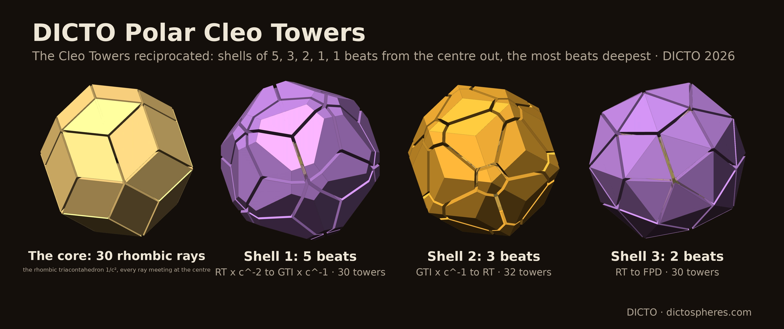
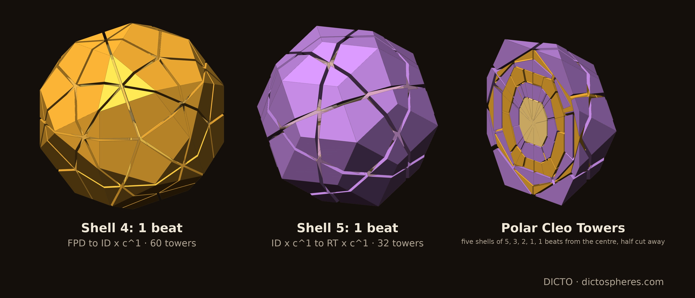
DICTO's idea: cut the DICTO Ogdoecontahedron (OG) [3], with its 20 regular hexagons and 60 kites, into its 80 face pyramids, every tip at the centre, as the CLEO sphere is cut into CLEOs and pockets. DICTO named them Aktis (Greek, ray): 20 DICTO Hex Aktis on the hexagons and 60 DICTO Deltoid Aktis on the kites. Values are in the frame of [4], where the OG has 102 corners and volume (−1000 + 1240√5)/1539 ≈ 1.151868.
The kites lie farther out than the hexagons, so the Deltoid Aktis are the taller rays.
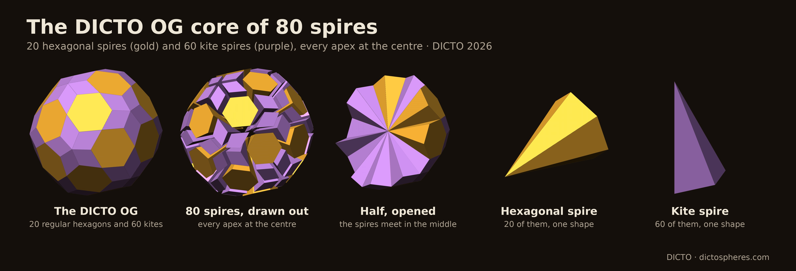
The DICTO OTT (Octahedrally Truncated Triacontahedron) [5] is the rhombic triacontahedron cut by its octahedron at all 8 key sites: 24 corners, 38 faces (8 equilateral triangles in the octahedron's faces, 24 half-rhombi and 6 whole rhombi), volume (−608 + 320√5)/81 ≈ 1.327676, pyritohedral symmetry. DICTO's idea: cut it, like the OG, into its face pyramids from the centre, the OTT rays, which DICTO named Oktaktis (on the octahedron cuts), Triaktis (on the half-rhombi) and Tetraktis (four-sided, on the whole rhombi). The 38 rays fill the OTT exactly and fall into three shapes (corner matching); their values are in Table 3.
The Oktaktis are Cleo-Icos. DICTO noticed that the Oktaktis looks like a Cleo-Icos; we prove it exactly: each Oktaktis is exactly similar to the Cleo-Icos [7, §5.6], the pyramid from an icosahedron's centre to one face: height²/edge² = φ⁴/12 and side²/edge² = (φ² + 1)/4, as for the icosahedron. They lie in the OG's hexagon planes. In the frame of [4], where both solids are given, each of the OTT's 8 octahedral triangles lies exactly in one of the 20 hexagon planes of the OG; so an Oktaktis has exactly the height of a Hex Aktis, √((6 + 2√5)/27). Since the OG lies inside the OTT [5], each of those 8 hexagons of the OG lies in an octahedral triangle of the OTT; more exactly, the hexagon's circumradius equals the triangle's inradius (squared, (6 − 2√5)/27), and three corners of the hexagon are exactly the midpoints of the triangle's edges, so each hexagon touches its triangle at those three points.
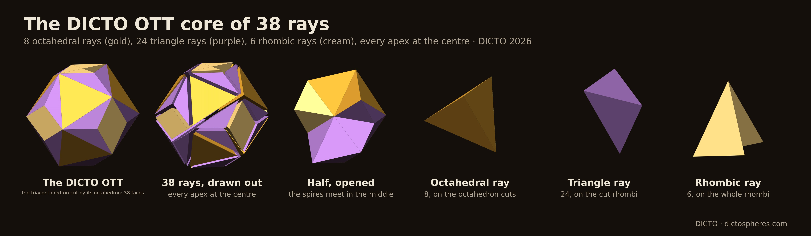
The beats. By Corollary 1 the beats of the OG turned out are the OG, φ·TPH, φ²·TQH, φ³·TQP, φ⁴·TQHD, …; at each of the first four beats the corners are checked to be exactly the flipped tips, and each solid is fixed by the 60 rotations of the icosahedron (Table 4a). Every beat holds the one before (Corollary 1), also from φ²·TQH to φ³·TQP, where the downward family itself breaks (Proposition 1). Beat k is exactly φk times the k-th downward solid, but the downward solids themselves shrink [2], so the outer radius grows by a little less than φ per beat: 1.52, 1.53, 1.61 and 1.51.
Towers (Corollary 5, built). The shells of 1, 1 and 2 beats are cut into towers by Lemma 1; their exact values are in Table 4b.
So the shells hold 80, 132 and 140 towers of 2, 3 and 3 shapes. In shell 2 the 120 triangles of the TPH carry towers of two volumes; split by the 60 rotations they form two orbits of 60, each of one volume, so they are two shapes (60 + 60), and with the 12 pentagon towers the shell has three.
The full flip (float, for comparison). Flipping the Aktis at their whole height puts each tip at 2 times the foot point. The same argument gives beat k = 2k times the k-th downward solid, and a float run agrees: 102, 80, 132, 140 and 162 corners at beats 0–4, the outer radius growing by about 1.9 per beat (flip-float.json). The golden step gives the same solids, growing by a little less than φ.
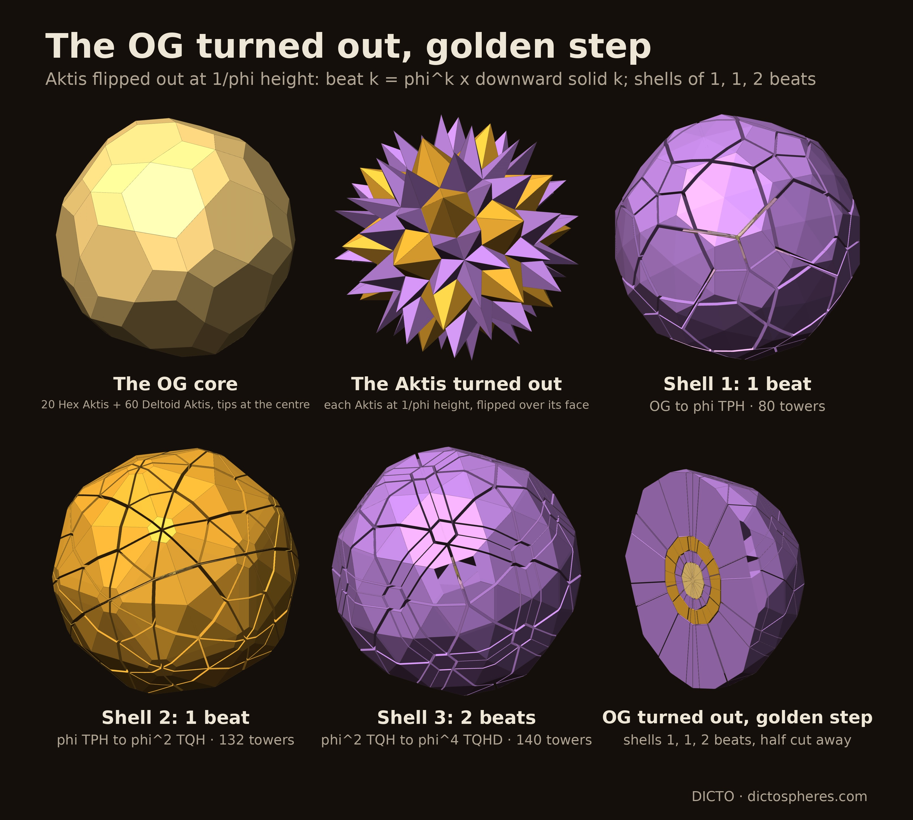
Shell 4 (3 beats, beat 4 → beat 7; built). Exact: both boundaries, φ⁴·TQHD and φ⁷·TQP-402, are fixed by all 60 rotations, beat 4 lies inside beat 7, and the shell is cut into 200 towers on the TQHD's faces: 120 on triangles with two volumes, 60 of each (≈ 570.644662 and 889.860165), 60 on quadrilaterals (≈ 147.140716) and 20 on hexagons (≈ 5699.759901), adding up to the shell (≈ 210453.9306, frame of [2]) with remainder exactly 0 (shell4_exact.py; its one FAIL line is the test "one volume per kind of face", the triangles having two). Shell 5 (5 beats, beat 7 → beat 12) is not built: beat 12 (down 12) has not been computed; its nesting is covered by Theorem 2. Down 5 to down 10 are built exactly; of down 11 only the exact points are built (its faces from float tests).
The polar sequence (Corollaries 2 and 6; DICTO's idea: the polar cycles of the OG turned out). By Lemma 3, reciprocation turns the turned-out sequence into the UP steps from the DICTO Hecatodihedron, shrinking inward: polar(Sk) = φ−kTk(Hecatodihedron). Built exactly for k ≤ 4 (reciprocation about the unit sphere in the frame of [2]), the corner sets agree exactly; the solids have 80, 132, 140, 162 and 200 corners and 102, 80, 132, 140 and 162 faces (polar S0, the Hecatodihedron: 60 3-gons, 30 4-gons, 12 5-gons; polar S4: 90 four-sided faces in two kinds, 30 and 60, and 72 pentagons in two kinds, 60 and 12), and each lies inside the one before. Corollary 6 (built): the inward shells of 1, 1 and 2 beats, cut into towers on the faces of each shell's inner solid by Lemma 1, hold 80, 132 and 162 towers of 2, 3 and 4 shapes, each shell filled exactly (Table 8).
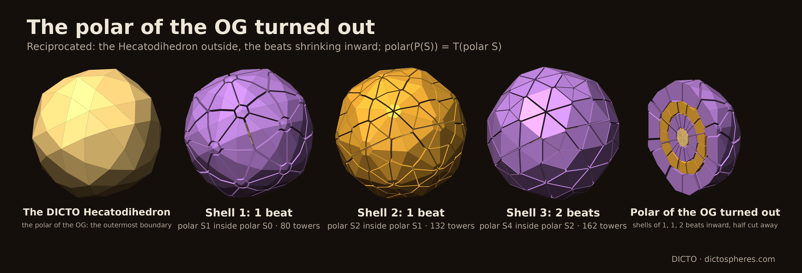
DICTO observed that every shell so far has a different pattern on its surface, and that "the lines defining the shells denote the structures". We read each boundary solid two ways, both exactly: by its faces (the orbits of the 60 rotations, and how faces of one kind join edge to edge into groups) and by its lines (the edge network). The boundaries are few solids: the Cleo Towers end at ID | RT | GTI | ID | FPD | ID (each 10/φ⁴ to a power larger), the Polar Cleo Towers at RT | GTI | RT | FPD | ID | RT, and the OG turned out at OG | TPH | TQH | TQHD (each φ to a power larger; the TQP is passed through inside shell 3). Scale does not change a pattern, so Table 5 (Appendix A) lists the nine solids once each.
Proposition 4 (surface patterns; built: the nine solids of Table 5). The faces and lines of the boundary solids are as in Table 5; in particular:
Faces. No two boundaries of one sequence in a row have the same faces. In the OG's sequence each boundary solid has its own grouping: kites in fives (OG), triangle pairs on the two-fold axes (TPH), trapezoid ribbons on the two-fold axes (TQH), and trapezoid rings of five on the five-fold axes (TQHD), which repeat the rings of the TQP passed through inside shell 3.
Lines. No edge runs on straight through a corner, as convexity requires (a corner never lies between two points of the solid). The lines that line up across the surface are the parallel families. On every solid but the RT and the OG, 15 families point along the two-fold axes (on the RT, a zonohedron, the 6 families point along the five-fold axes); the OG alone has no edge along any axis. Only the ID has central belts: its six decagonal equators, as is classical.
The ribbons (DICTO's observation). On the TQH of the OG turned out (beat 2, φ²·TQH) the 60 four-sided faces are congruent isosceles trapezoids, with parallel sides of squared length (38367 + 17019√5)/13448 and (6615 + 2925√5)/3362 (≈ 2.3839 and 1.9781), legs ≈ 0.4343, corner angles ≈ 62.15° and 117.85° and height ≈ 0.3840. They pair up across their shorter parallel sides: 30 shared edges, every trapezoid in exactly one pair, each pair centred on a two-fold axis (a half-turn about it swaps the two), two pairs per axis, one at each end. So each ribbon is drawn by three parallel lines, its two outer sides and the seam, bent ≈ 23.28° across the seam (float). The 15 edge families of the TQH that point along a two-fold axis are exactly these lines: 6 per family, the two ribbons at the two ends of one two-fold axis, all running along a second two-fold axis. Shell 3 stands a long blade-like tower on each trapezoid, so each ribbon carries two blades (Figure 8). In the TQP and the TQHD the trapezoids join along their legs instead, into rings of five on the five-fold axes (each trapezoid meeting two others); of the nine solids of Table 5 only the TQH has ribbons; further down they return (Proposition 5). DICTO sees in the ribbons a possible new shell structure; we record the observation and claim nothing beyond the checks above.
Proposition 5 (the axes; built: the OG to down 9). A symmetry axis leaves a convex solid with this symmetry through a corner on the axis, a face square to the axis or (on a two-fold axis only) the inside of an edge. For every solid of the downward family from the OG to down 9, which of the three it is, on each kind of axis, is as in Table 6 (exact: zero cross products in ℚ(√5), on the corners and face planes of each solid's hull; from down 6 on, not every foot point of the reverse step is a corner of the hull: 192 of 252 points at down 6, 260 of 320 at down 7, 312 of 402 at down 8, and all 500 at down 9). At the two-fold edges of the TPH and down 5 two congruent isosceles triangles meet; at those of the TQH and down 8, a ribbon (two congruent isosceles trapezoids across their shorter parallel sides, the trapezoid's orbit having 60 faces, so 30 ribbons); at down 6, two congruent isosceles trapezoids across their longer parallel sides; at down 9, a ribbon again. So the ribbons of the TQH return exactly at down 8 and at down 9.
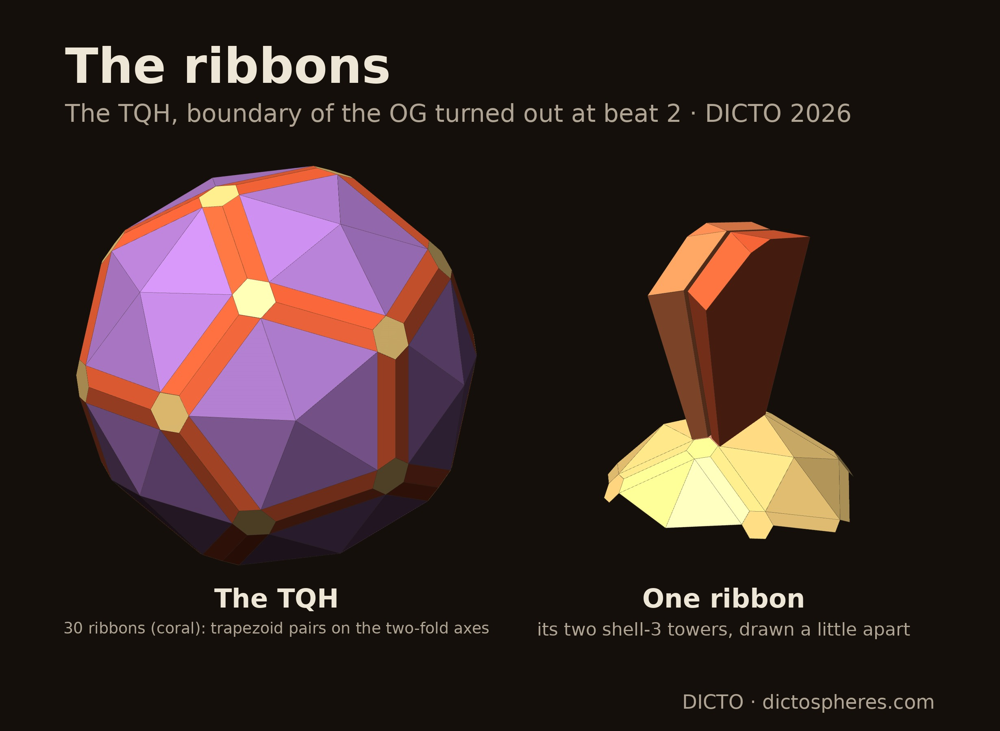
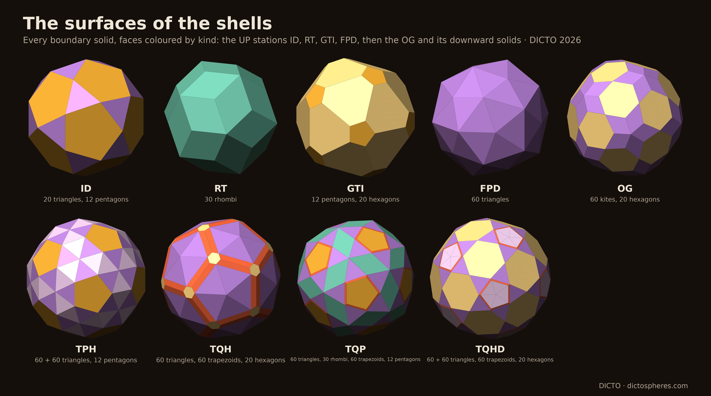
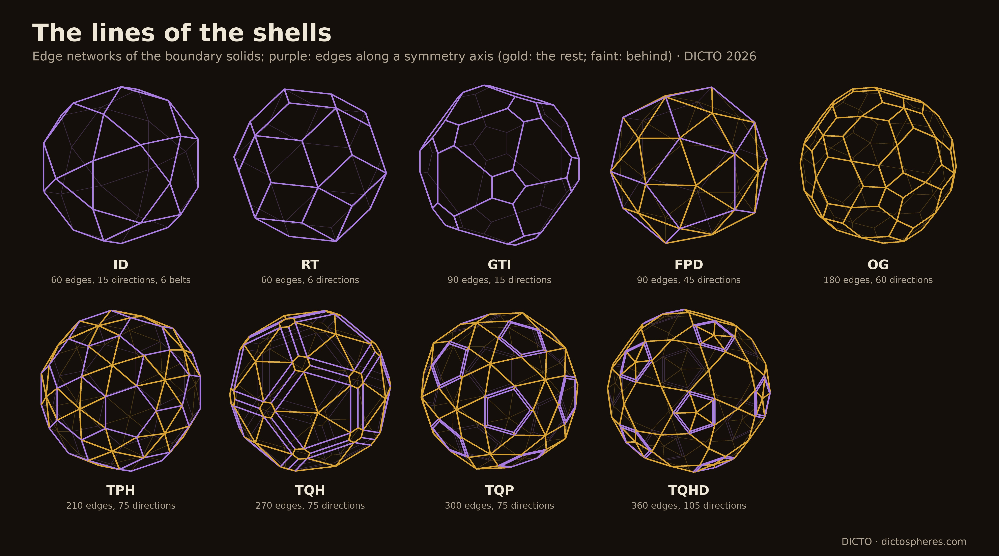
Conjecture 1 (the OG's margin). tmin(Dk) ≤ 3/φ² for every k. Evidence: exact for k = 0, …, 8 (Table 7), with equality at k = 3; the values are not monotone (1.134, 1.117, 1.103, 1.146, 1.042, 1.087, 1.026, 1.060, 1.138). Corollary 1 does not need it.
Conjecture 2 (the octahedral analogue). Every convex polytope with octahedral rotational symmetry satisfies S ⊂ 3·P(S) (sharp for the cube and octahedron). Evidence: numerically, every octahedral orbit hull has inradius at least 1/√3 of its radius (covering_lemma.py); the kite argument of Theorem 2 fails here (the kite's second diagonal is 60°, more than 54.74°).
Observation 1 (the axis rhythm; observed, Table 6). On the five- and three-fold axes corner and face alternate at every step from the OG to down 9 (period 2); one reason is plain: a face square to an axis has its foot point on the axis, and the reverse step makes it a point of the next solid (not always a corner, see Proposition 5). On the two-fold axes the word runs corner, edge, edge, face for two full periods, the OG to the TQP and the TQHD to down 7; at down 8 it reads edge where the period would give corner, the foot point on the axis not being a corner of the hull, and there the ribbons of the TQH return; at down 9 it reads edge again, as the period gives, with a ribbon there too, and at down 10 it reads face where the period gives edge (axis_words.py: no listed point of down 10 lies on the two-fold axis, and a face of its hull is square to it). So the edge stations and the ribbons recur in the solids built, but on the hulls the period 4 holds only from the OG to down 7: the hull word breaks at down 8 (the axis point is a listed foot point but not a hull corner), and the listed points themselves leave the period at down 10. For DICTO's reading of the ribbons as a possible shell structure, this is the law found so far; we claim nothing for solids not built.
In the sources checked (the full text of the 77 library sources with a text layer listed in the appendix, searched on 21 October 2026; the library's link-only entries were not searched) we did not find Theorems 1 or 2, Lemma 3, tower shells in Fibonacci beats, the Polar Cleo Towers, the Aktis or ray cores of the OG and the OTT, the OG turned out, or the ribbons of the TQH.
Outlook (DICTO's idea, untested). DICTO notes that these shells may mirror material structures, as geodesic forms did before C60 [24] and carbon nanotubes [25] were found. Nested icosahedral shells do occur in nature: in the clusters of quasicrystals and their approximants (Mackay [12], Bergman [22], Tsai [13]), in metal and boron nanoclusters, and in virus capsids (Caspar and Klug [23]; see also [26]). Whether the shells of this paper correspond to any real structure has not been tested; a checkable next step is to compare their corner counts and radius ratios with published sequences of cluster shells.
Exact (ℚ(√5)), with the tools of [1] (exact_cycle.py, exact_shells.py, exact_downward.py in studies/2026-10-19-five-fold-octet) and of [4] (q5.py, exactpoly.py in studies/2026-10-18-ocd-octet/scripts): tower_shells_exact.py (the Cleo Towers; log tower-shells-exact.log, 6 PASS; data tower-shells-exact.json) and polar_exact.py (the polarity and the Polar Cleo Towers; polar-exact.log, 8 PASS; polar-exact.json) in 2026-10-20-cleo-towers; og_spires_exact.py (the 80 Aktis; og-spires-exact.log, 7 PASS) in 2026-10-20-og-spires; ott_rays_exact.py (the 38 rays; ott-rays-exact.log, 5 PASS) and ott_og_planes.py (the octahedral cuts in the OG's hexagon planes; ott-og-planes.log, 4 PASS, also the hexagon touching its triangle), on the OTT of [5] (cut8-exact.json, cut8-exact.log), in 2026-10-20-ott-rays; golden_exact.py (the OG turned out; golden-exact.log, 15 PASS and one FAIL line, which is only the test "one shape per kind of face" for shell 2, where the triangle towers have two shapes) and golden_orbits.py (shell 2 by symmetry orbit: two triangle orbits of 60 and one pentagon orbit of 12, one volume each; golden-orbits.log, 6 PASS) golden_ribbons.py (the trapezoids of the TQH, TQP and TQHD and how they join; golden-ribbons.log, 14 PASS), surface_patterns.py (faces, kinds and groups of the nine boundary solids; surface-patterns.log, 28 PASS) surface_lines.py (their edge networks; surface-lines.log, 12 PASS) and kyushindo_checks.py (the condition w·v ≤ w·w for every station, and the 60-rotation symmetry of the inner and outer solid of every shell; kyushindo-checks.log, 13 PASS), in 2026-10-21-og-turned-out. Also in 2026-10-21-og-turned-out: nest_feet.py (foot points against their faces, and the nesting of the turned-out and downward sequences, k ≤ 8; nest-feet.log, 17 PASS), ribbons_return.py and axis_hull.py (axis words on the hulls and the faces at the two-fold edges, OG to down 9; ribbons-return.log, 14 PASS, axis-hull.log), polar_turned.py (Corollaries 2 and 6; polar-turned.log, 13 PASS), with polar_figs.py and polar_compose.py; axis_words.py (by the study's referee; its corner test runs over all listed foot points, so from down 6 on its results are used here only where they do not depend on that, as for down 10's faces; axis-words.log, axis-words-10.log). The proofs of Theorems 1 and 2 and the exact margins: studies/2026-10-21-nesting-proof (README.md; tmin_exact.py, tmin-exact.log and tmin-exact.json, k ≤ 8; covering_lemma.py and covering-lemma.log; tmin_general.py). The downward solids beyond down 4: golden_exact_long.py (golden-long-solids.pkl, on the node; down 12 still building). Float: flip_float.py (flip-float.json). Each script takes the path of its tool folder as its argument (python3 <script> <tool folder>); polar_exact.py chooses the corner triples by an exact determinant where the published helper of [1] used a float test. Figures: *_figs.py, shots.mjs and *_compose.py in each folder (Figures 8–10: surface_figs.py and surface_compose.py, which also draws the line figure) (float copies of the exact solids); the cover: cover.py in this paper's folder.
Kyushindo is the martial art of Kenshiro Abbe [20, 21]. DICTO gives its three principles as Change 万物流転, Rhythm 律動 and Harmony 調和, and his brief for this series was "rhythm, harmony and change in the construction of towers and cores". Here rhythm is the Fibonacci beats, harmony the exact golden fits, and change that each shell's form differs from the last (§7).
The exact values behind the constructions of §§3–8; every number is checked against the logs by audit.py.
| Shell | Beats | From → to | Towers | Each tower (exact; ≈) | Shell volume |
|---|---|---|---|---|---|
| 1 | 1 | ID → RT | 20 on triangles 12 on pentagons | (45 − 17√5)/120 ≈ 0.058224 5/12 ≈ 0.416667 | (75 − 17√5)/6 ≈ 6.1645 |
| 2 | 1 | RT → GTI | 30 on rhombi | (3 − √5)/4 ≈ 0.190983 | (45 − 15√5)/2 ≈ 5.7295 |
| 3 | 2 | GTI → c·ID | 20 on hexagons 12 on pentagons | (−236973 + 105982√5)/12 ≈ 0.829699 (1164825 − 520925√5)/24 ≈ 0.053701 | (1124745 − 502955√5)/6 ≈ 17.2384 |
| 4 | 3 | c·ID → c·FPD | 20 on triangles 12 on pentagons | ≈ 0.998686 ≈ 3.613281 | ≈ 63.3331 |
| 5 | 5 | c·FPD → c³·ID | 60 on triangles | ≈ 5.135315 | ≈ 308.1189 |
Table 1. The Cleo Towers, at ID circumradius φ. Shell 3 passes through the FPD, shell 4 through c·RT and c·GTI, shell 5 through c²·ID, c²·RT, c²·GTI and c²·FPD. The exact values of shells 4 and 5 (denominators 261, 9 and 27) are in tower-shells-exact.json.
| Shell | Beats | From → to | Towers | Each tower (exact; ≈) | Shell volume |
|---|---|---|---|---|---|
| 1 | 5 | RT/c² → GTI/c | 30 on rhombi | (155284 + 69441√5)/1500000 ≈ 0.207039 | (155284 + 69441√5)/50000 ≈ 6.2112 |
| 2 | 3 | GTI/c → RT | 12 on pentagons 20 on hexagons | (51911 − 17827√5)/83520 ≈ 0.144260 (146143 + 12334√5)/348000 ≈ 0.499203 | (6343 − 741√5)/400 ≈ 11.7152 |
| 3 | 2 | RT → FPD | 30 on rhombi | (12982 − 5800√5)/27 ≈ 0.474286 | (129820 − 58000√5)/9 ≈ 14.2286 |
| 4 | 1 | FPD → c·ID | 60 on triangles | (77875 − 34825√5)/27 ≈ 0.145655 | (1557500 − 696500√5)/9 ≈ 8.7393 |
| 5 | 1 | c·ID → c·RT | 20 on triangles 12 on pentagons | (334125 − 149425√5)/3 ≈ 0.180821 (201250 − 90000√5)/3 ≈ 1.294008 | (9097500 − 4068500√5)/3 ≈ 19.1445 |
Table 2. The Polar Cleo Towers, in the same frame; every kind of tower one shape, every shell filled exactly.
| Rays | Base | Each ray (exact; ≈) | Height ≈ | Share of the OTT |
|---|---|---|---|---|
| 8 Oktaktis | equilateral triangle (octahedron cut) | (−4 + 4√5)/81 ≈ 0.061040 | 0.6228 | 36.78% |
| 24 Triaktis | half-rhombus | (−16 + 8√5)/81 ≈ 0.023315 | 0.6667 | 42.15% |
| 6 Tetraktis | whole rhombus | (−32 + 16√5)/81 ≈ 0.046631 | 0.6667 | 21.07% |
Table 3. The OTT core, in the frame of [4, 5]. The Triaktis and Tetraktis have one height because all 30 of their bases lie in the triacontahedron's face planes.
| Beat | Solid | Corners | Corner radii ≈ |
|---|---|---|---|
| 0 | OG | 102 | 1.618034, 1.687285 |
| 1 | φ·TPH | 80 | 2.445695, 2.564186 |
| 2 | φ²·TQH | 132 | 3.896825, 3.933014 |
| 3 | φ³·TQP | 140 | 6.003187, 6.032557, 6.324828 |
| 4 | φ⁴·TQHD | 162 | 9.248108, 9.555175, 9.560121 |
Table 4a. The beats of the OG turned out built so far with towers (frame of [2]): corners and corner radii.
| Shell | Beats | From → to | Towers | Each tower ≈ | Shell volume ≈ |
|---|---|---|---|---|---|
| 1 | 1 | OG → φ·TPH | 60 on kites 20 on hexagons | 0.349923 1.282073 | 46.6369 |
| 2 | 1 | φ·TPH → φ²·TQH | 60 on triangles 60 on triangles 12 on pentagons | 1.003994 0.992512 3.727717 | 164.5229 |
| 3 | 2 | φ²·TQH → φ⁴·TQHD | 60 on triangles 60 on trapezoids 20 on hexagons | 36.321214 13.483680 6.977223 | 3127.8381 |
Table 4b. The OG turned out, golden step, in the frame of [2]; shell 3 passes through φ³·TQP. All values are exact in golden-exact.json (for instance a hexagon tower of shell 1 is (143097 + 71747√5)/236748); each shell's towers add up to the shell with remainder exactly 0.
| Solid | Faces, and how faces of one kind group (exact) | Lines: edges; directions (exact) |
|---|---|---|
| ID | 20 equilateral triangles, apart, on the three-fold axes; 12 regular pentagons, apart, on the five-fold axes | 60; 15 directions of 4 edges, all along two-fold axes; 6 central belts of 10 edges |
| RT | 30 rhombi, all joined | 60; 6 directions of 10 edges, along the five-fold axes |
| GTI | 12 regular pentagons, apart, on the five-fold axes; 20 hexagons, all joined | 90; 15 directions of 6, along two-fold axes |
| FPD | 60 isosceles triangles, all joined | 90; 45 directions of 2 (15 along two-fold axes) |
| OG | 60 kites in 12 groups of 5 on the five-fold axes; 20 regular hexagons, apart, on the three-fold axes, each bordered by kites on all six edges | 180; 60 directions (30 of 2, 30 of 4), none along an axis |
| TPH | 60 isosceles triangles, apart; 60 isosceles triangles in 30 pairs on the two-fold axes; 12 regular pentagons, apart, on the five-fold axes | 210; 75 directions (15 of 6 along two-fold axes, 60 of 2) |
| TQH | 60 isosceles triangles in 12 groups of 5 on the five-fold axes; 60 isosceles trapezoids in 30 ribbons on the two-fold axes; 20 regular hexagons, apart, on the three-fold axes, each bordered by trapezoids on all six edges | 270; 75 directions (15 of 6 along two-fold axes: the ribbons' lines; 30 of 2, 30 of 4) |
| TQP | 60 isosceles triangles, apart; 30 rhombi, apart, on the two-fold axes; 60 isosceles trapezoids in 12 rings of 5 on the five-fold axes; 12 regular pentagons, apart, on the five-fold axes | 300; 75 directions (15 of 8 along two-fold axes, 30 of 2, 30 of 4) |
| TQHD | 60 isosceles triangles, apart; 60 isosceles triangles in 12 groups of 5 on the five-fold axes; 20 regular hexagons, apart, on the three-fold axes; 60 isosceles trapezoids in 12 rings of 5 on the five-fold axes | 360; 105 directions (15 of 8 along two-fold axes, 60 of 2, 30 of 4) |
Table 5. The boundary solids. "Apart": no two faces of that kind share an edge. A group is "on" an axis when a rotation about that axis maps it to itself. A direction is "along" an axis when its edges are parallel to it. A central belt is a closed circuit of edges in one plane through the centre.
| Axis | OG | TPH | TQH | TQP | TQHD | down 5 TQP-252 | down 6 TQ-320 | down 7 TQP-402 | down 8 TQ-500 | down 9 TQD-732 |
|---|---|---|---|---|---|---|---|---|---|---|
| five-fold | corner | face | corner | face | corner | face | corner | face | corner | face |
| three-fold | face | corner | face | corner | face | corner | face | corner | face | corner |
| two-fold | corner | edge | edge | face | corner | edge | edge | face | edge | edge |
| at the two-fold edge | triangle pair | ribbon | triangle pair | trapezoid pair (longer sides) | ribbon | ribbon |
Table 6. What each axis leaves the solid through, for every solid of the OG's downward family built (exact). At a two-fold edge: "triangle pair", two congruent isosceles triangles meet there; "ribbon", two congruent isosceles trapezoids meet across their shorter parallel sides and all 60 trapezoids of that kind pair so, as on the TQH; at down 6 two congruent isosceles trapezoids meet across their longer parallel sides.
| k | Corners (listed) | Faces | tmin(Dk) exact | ≈ | φ − tmin |
|---|---|---|---|---|---|
| 0 | 102 | 80 | (445 − 16√5)/361 | 1.133581 | +0.4845 |
| 1 | 80 | 132 | (5941 − 1622√5)/2071 | 1.117382 | +0.5007 |
| 2 | 132 | 140 | (247111 − 104650√5)/11881 | 1.103147 | +0.5149 |
| 3 | 140 | 162 | (9 − 3√5)/2 | 1.145898 | +0.4721 |
| 4 | 162 | 200 | (21 − √5)/18 | 1.042441 | +0.5756 |
| 5 | 200 | 252 | (long, in tmin-exact.json) | 1.086902 | +0.5311 |
| 6 | 192 (252) | 320 | (long, in tmin-exact.json) | 1.025657 | +0.5924 |
| 7 | 260 (320) | 402 | (long, in tmin-exact.json) | 1.059516 | +0.5585 |
| 8 | 312 (402) | 500 | (long, in tmin-exact.json) | 1.138077 | +0.4800 |
Table 7. The containment margins of the OG's downward family (tmin_exact.py, frame of [2]): every value exact in ℚ(√5) and below φ by exact sign; the largest is tmin(D3) = (9 − 3√5)/2 = 3/φ². Not computed for k ≥ 9.
| Shell | Beats | Inner inside outer | Towers (on the inner solid) | Each tower ≈ | Shell volume ≈ |
|---|---|---|---|---|---|
| 1 | 1 | polar S1 inside polar S0 | 60 on 5-gons 20 on 6-gons | 3.760911 0.691479 | 239.4842 |
| 2 | 1 | polar S2 inside polar S1 | 60 on 3-gons 60 on 5-gons 12 on 5-gons | 0.370515 0.427719 1.121247 | 61.3490 |
| 3 | 2 | polar S4 inside polar S2 | 60 on 4-gons 30 on 4-gons 12 on 5-gons 60 on 5-gons | 0.083893 0.259256 0.000008 0.152786 | 21.9785 |
Table 8. The polar of the OG turned out (Corollary 6), at φ⁴ times the frame of reciprocation about the unit sphere in the frame of [2]; one shape per orbit of faces, each shell's towers adding up to it with remainder exactly 0 (exact values in polar-turned.json).
| Solid | Name (DICTO) | Corners (listed points) | Faces | Face kinds |
|---|---|---|---|---|
| down 5 | DICTO TQP-252 | 200 (200) | 252 | 120 triangles, 120 quadrilaterals, 12 regular pentagons |
| down 6 | DICTO TQ-320 | 192 (252) | 320 | 240 triangles, 20 regular triangles, 60 quadrilaterals |
| down 7 | DICTO TQP-402 | 260 (320) | 402 | 300 triangles, 90 quadrilaterals, 12 regular pentagons |
| down 8 | DICTO TQ-500 | 312 (402) | 500 | 360 triangles, 20 regular triangles, 120 quadrilaterals |
| down 9 | DICTO TQD-732 | 500 (500) | 732 | 540 triangles, 180 quadrilaterals, 12 decagons |
| down 10 | DICTO TQHD-662 | 480 (732) | 662 | 480 triangles, 150 quadrilaterals, 20 hexagons, 12 decagons |
| down 11 | DICTO TQP-672 | 470 (662) | 672 | 420 triangles, 240 quadrilaterals, 12 regular pentagons |
Table 9. The new solids of the OG's downward family and DICTO's names (face kinds and face count). Points exact; hull faces and face kinds measured on the exact points by float tests (new_solids_faces.py), not yet proved exactly. The TQHD-662 is not the TQHD of [2], which has 200 faces.

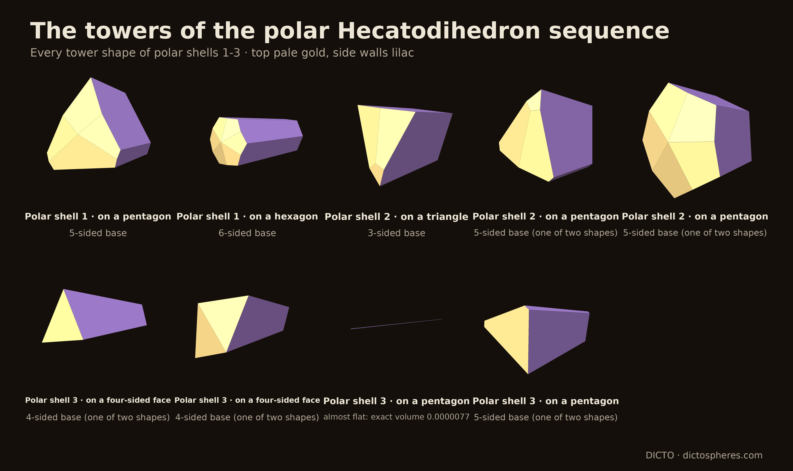
The library's manifests list 261 entries, of which 90 have a local file; with three files at its root, these give the 77 distinct sources with a text layer listed below and 13 page images. The full text of the 77 sources was searched on 21 October 2026 for: pedal, antipedal, reciprocation, polar, nested, concentric, shell, Fibonacci, central pyramid, spire, tower, ogdoecontahedron, octahedrally truncated, Hypsicles, Mackay and Kyushindo. None contains the results of this paper. The relevant hits are Kepler's nested solids [11]; the nested icosahedral point sets of Dechant, Wardman, Keef and Twarock and of Twarock, Valiunas and Zappa [14, 15]; the concentric cluster shells of Fujita, Takano, Yamamoto and Tsai [13]; Fibonacci sequences in Baake's guide and the other aperiodic-order surveys; and the Wikipedia pages on Kyūshindō and Kenshiro Abbe [20, 21]. The 13 page images without a text layer (the patents of Fuller, Snelson, Pearce, Baer, Hogan, Bergman and Lalvani, and Fedorov 1885) and the about 170 link-only entries were not searched.
| Author(s) | Year | Title |
|---|